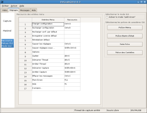

Menus…
Fenêtre Vidéo…
Petite Fenêtre Vidéo…
Fenêtre de Réglages "Capture"…
Fenêtre de Réglages "Matériel"…
Fenêtre de Réglages "GUI"…
|
Menus… |
Fenêtre Vidéo… |
|
Petite Fenêtre Vidéo… |
Fenêtre de Réglages "Capture"… |
|
Fenêtre de Réglages "Matériel"… |

Fenêtre de Réglages "GUI"… |
(c) 2006, 2007, 2008 Bastien Montagne (montagne29 chez wanadoo point fr).
Projet hébergé sur sourceforge.net/projects/dvgrabgui.